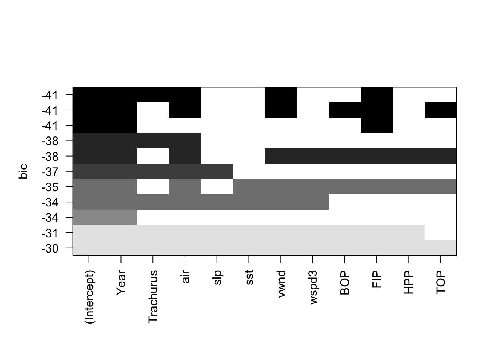
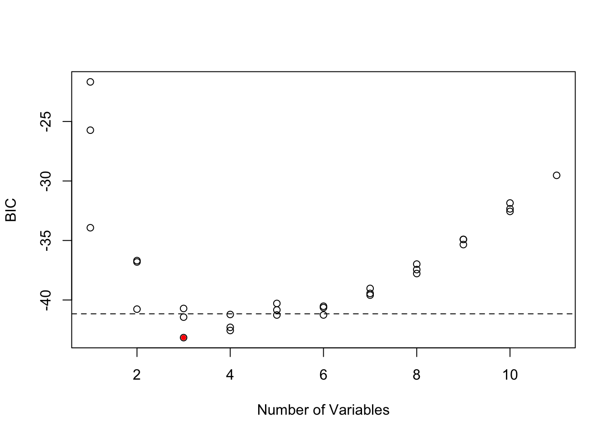
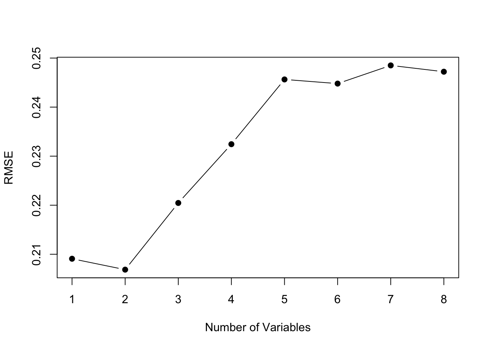
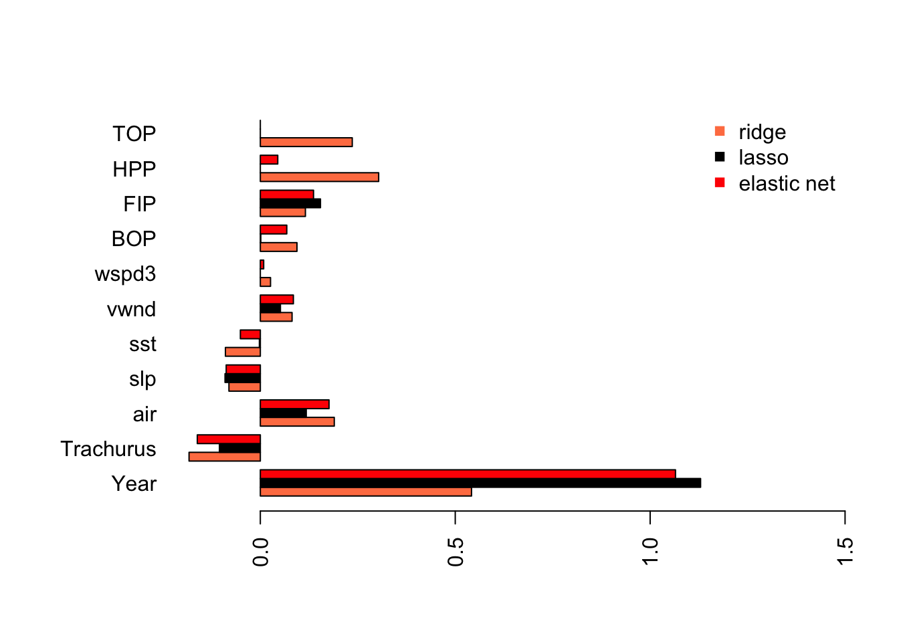
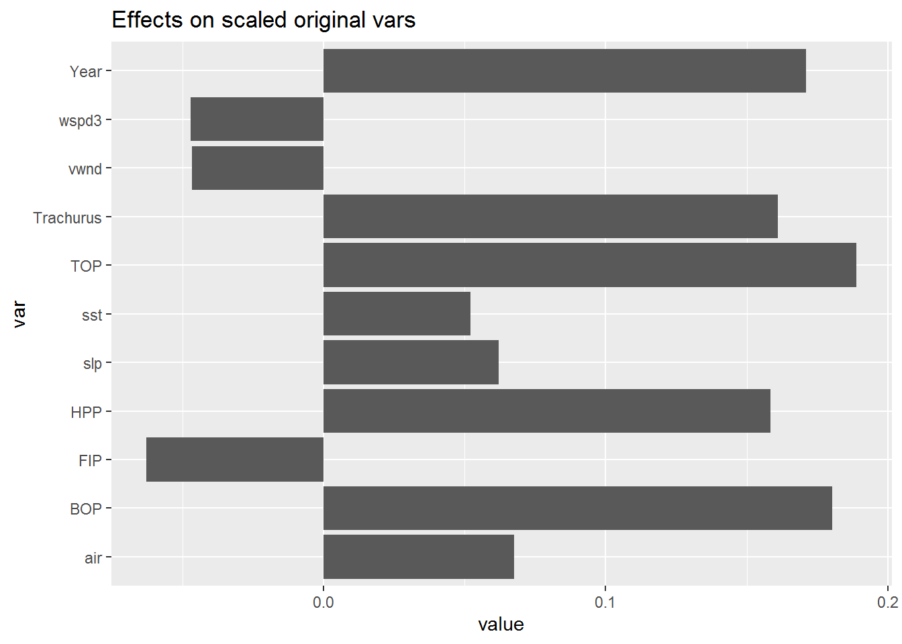

6.1 Multivariate linear regression
In this chapter, I will illustrate developing a forecasting model using a multivariate regression (MREG). I will show the approach the Stergiou and Christou used to develop MREG models and then compare to other approaches. Fitting multivariate linear regressions with ARMA errors and fitting ARMAX models will be covered in separate chapters. More background on the methods discussed in this chapter can be found in the references in the endnotes12 [^MSGEGref3] [^MSGEGref4].
A multivariate linear regression model with Gaussian errors takes the form:
\[\begin{equation} \begin{gathered} x_t = \alpha + \phi_1 c_{t,1} + \phi_2 c_{t,2} + \dots + e_t \\ e_t \sim N(0,\sigma) \end{gathered} \end{equation}\]
In R, we can fit this model with lm(), which uses ordinary least squares (OLS). For model selection (determining what explanatory variables to include), there are a variety of approaches we can take. I will show approaches that use a few different packages.
library(ggplot2)
library(MASS)
library(car)
library(glmnet)
library(Hmisc)
library(stringr)
library(caret)
library(leaps)
library(forecast)6.1.1 Covariates used in Stergiou and Christou
Stergiou and Christou used five environmental covariates: air temperature (air), sea-level pressure (slp), sea surface temperature (sst), vertical wind speed (vwnd), and wind speed cubed (wspd3). Monthly values for these covariates in three 1 degree boxes were taken from the COADS database, and then a yearly average over all months in the three boxes was used to compute a yearly average.
These yearly average environmental covariates are in covsmean.year, which is part of landings.RData.
load("landings.RData")
colnames(covsmean.year)## [1] "Year" "air.degC" "slp.millibars" "sst.degC"
## [5] "vwnd.m/s" "wspd3.m3/s3"The covariates are those in Stergiou and Christou with the following differences. I used the ICOADS data not the COADS. The boxes are 1 degree but on 1 degree centers not 0.5 centers. Thus box is 39.5-40.5 not 39-40. ICOADS does not include ‘vertical wind’. I used NS winds which may be different. The code to download the ICOADS data is in the appendix.
In addition to the environmental covariates, Stergiou and Christou used many covariates of fishing effort for trawlers, purse seiners, beach seiners, other coastal boats and demersal (sum of trawlers, beach seiners and other coastal boats). For each fishery type, they used data on number of fishers (FI), number of boats (BO), total engine horse power (HP), total boat tonnage (TO). They also used an economic variable: value (VA) of catch for trawlers, purse seiners, beach seiners, other coastal boats.
colnames(fish.cov)## [1] "Year" "Boats.BO" "Trawlers.BOT"
## [4] "Purse.seiners.BOP" "Beach.seiners.BOB" "Other.BOC"
## [7] "Demersal.BOD" "Fishers.FI" "Trawlers.FIT"
## [10] "Purse.seiners.FIP" "Beach.seiners.FIB" "Other.FIC"
## [13] "Demersal.FID" "Horsepower.HP" "Trawler.HPT"
## [16] "Purse.seiners.HPP" "Beach.seiners.HPB" "Other.HPC"
## [19] "Demersal.HPD" "Trawler.VAT" "Purse.seiners.VAP"
## [22] "Beach.seiners.VAB" "Other.VAC" "Tonnage.TO"
## [25] "Trawlers.TOT" "Purse.seiners.TOP"For anchovy, the fishery effort metrics from the purse seine fishery were used. Lastly, biological covariates were included which were the landings of other species. Stergiou and Christou state (page 118) that the other species modeled by VAR (page 114) was included. This would mean sardine was used as an explanatory variable. However in Table 3 (page 119), it appears that Trachurus (Horse mackerel) was included. It is not clear if sardine was also included but not chosen as an important variable. I included Trachurus and not sardine as the biological explanatory variable.
Preparing the data frame
We will model anchovy landings as the response variable. The covariates are lagged by one year, following Stergiou and Christou. This means that the catch in year \(t\) is regressed against the covariates in year \(t-1\). We set up our data frame as follows. We use the 1965 to 1987 catch data as the response. We use 1964 to 1986, so year prior, for all the explanatory variables and we log transform the explanatory variables (following Stergiou and Christou). We use \(t\) 1 to 23 as a “year” covariate. Our data frame will have the following columns:
colnames(df)## [1] "anchovy" "Year" "Trachurus" "air" "slp"
## [6] "sst" "vwnd" "wspd3" "BOP" "FIP"
## [11] "HPP" "TOP"In total, there are 11 covariates and 23 years of data—which is not much data per explanatory variable. Section @ref(cov.df) shows the R code to create the df data frame with the response variable and all the explanatory variables.
For most of the analyses, we will use the untransformed variables, however for some analyses, we will want the effect sizes (the estimated \(\beta\)’s) to be on the same scale. For these analyses, we will use the z-scored variables, which will be stored in data frame dfz. z-scoring removes the mean and normalizes the variance to 1.
dfz <- df
n <- nrow(df)
for(i in colnames(df)){
pop_sd <- sd(df[,i])*sqrt(n-1)/n
pop_mean <- mean(df[,i])
dfz[,i] <- (df[,i]-pop_mean)/pop_sd
}6.1.2 Collinearity
Collinearity is near-linear relationships among the explanatory variables. Collinearity causes many problems such as inflated standard errors of the coefficients and correspondingly unbiased but highly imprecise estimates of the coefficients, false p-values, and poor predictive accuracy of the model. Thus it is important to evaluate the level of collinearity in your explanatory variables.
Pairs plot
One way to see this is visually is with the pairs() plot. A pairs plot of fishing effort covariates reveals high correlations between Year, HPP and TOP.
pairs(df[,c(2,9:12)])
The environmental covariates look generally ok.
pairs(df[,c(2,4:8)])
Variance inflation factors
Another way is to look for collinearity is to compute the variance inflation factors (VIF). The variance inflation factor is an estimate of how much larger the variance of a coefficient estimate is compared to if the variable were uncorrelated with the other explanatory variables in the model. If the VIF of variable \(i\) is \(z\), then the standard error of the \(\beta_i\) for variable \(i\) is \(\sqrt{z}\) times larger than if variable \(i\) were uncorrelated with the other variables. For example, if VIF=10, the standard error of the coefficient estimate is 3.16 times larger (inflated). The rule of thumb is that any of the variables with VIF greater than 10 have collinearity problems.
The vif() function in the car package will compute VIFs for us.
full <- lm(anchovy ~ ., data=df)
car::vif(full)## Year Trachurus air slp sst vwnd
## 103.922970 18.140279 3.733963 3.324463 2.476689 2.010485
## wspd3 BOP FIP HPP TOP
## 1.909992 13.676208 8.836446 63.507170 125.295727This shows that Year, HPP and TOP have severe collinearity problems, and BOP and Trachusus also have collinearity issues, though lesser.
6.1.2.1 redun()
The Hmisc library also has a redundancy function (redun()) that can help identify which variables are redundant. This identifies variables that can be explained with an \(R^2>0.9\) by a linear (or non-linear) combination of other variables. We are fitting a linear model, so we set nk=0 to force redun() to only look at linear combinations.
We use redun() only on the explanatory variables and thus remove the first column, which is our response variable (anchovy).
a <- Hmisc::redun(~ .,data=df[,-1], nk=0)
a$Out## [1] "TOP" "HPP"This indicates that TOP and HPP can be explained by the other variables.
6.1.3 Effect of collinearity
One thing that happens when we have collinearity is that we will get “complementary” (negative matched by positive) and very large coefficients in the variables that are collinear. We see this when we fit a linear regression with all the variables. I use the z-scored data so that the effect sizes (x-axis) are on the same scale.

The Year coefficients is very large and the TOP and HPP coefficients are negative and very large.
If we look at the fit, we see the at the standard errors for Year, TOP and HPP are very large. The p-value for Year is significant, however we know that in the presence of severe collinearity, reported p-values should not be trusted.
summary(fit.full)##
## Call:
## lm(formula = anchovy ~ ., data = dfz)
##
## Residuals:
## Min 1Q Median 3Q Max
## -1.9718 -0.7834 -0.2115 0.6996 2.4024
##
## Coefficients:
## Estimate Std. Error t value Pr(>|t|)
## (Intercept) -4.383e-14 3.359e-01 0.000 1.0000
## Year 2.118e+00 7.139e-01 2.966 0.0128 *
## Trachurus -6.717e-02 2.983e-01 -0.225 0.8260
## air 2.987e-01 1.353e-01 2.207 0.0495 *
## slp -5.023e-02 1.277e-01 -0.393 0.7016
## sst -7.250e-02 1.102e-01 -0.658 0.5242
## vwnd 1.530e-01 9.930e-02 1.540 0.1517
## wspd3 6.086e-02 9.679e-02 0.629 0.5423
## BOP 3.137e-01 2.590e-01 1.211 0.2512
## FIP 1.347e-01 2.082e-01 0.647 0.5309
## HPP -5.202e-01 5.581e-01 -0.932 0.3713
## TOP -8.068e-01 7.839e-01 -1.029 0.3255
## ---
## Signif. codes: 0 '***' 0.001 '**' 0.01 '*' 0.05 '.' 0.1 ' ' 1
##
## Residual standard error: 1.611 on 11 degrees of freedom
## Multiple R-squared: 0.946, Adjusted R-squared: 0.8921
## F-statistic: 17.53 on 11 and 11 DF, p-value: 2.073e-05Stergiou and Christou do not state how (if at all) they address the collinearity in the explanatory variables, but it is clearly present.
6.1.4 Model selection with stepwise variable selection
Stergiou and Christou state that the covariates to include were selected with stepwise variable selection. Stepwise variable selection is a type of automatic variable selection. Stepwise variable selection has many statistical problems and the problems are worse when the covariates are collinear as they are in our case (see this link for a review of the problems with stepwise variable selection). The gist of the problem is one of over-fitting. A stepwise selection procedure will tend to choose variables that, by chance, have large coefficients. With only 23 data points and high collinearity, this is likely to be a rather large problem for our dataset. As we saw, collinearity tends to cause very large positive effect sizes offset by large negative effect sizes. However I use stepwise variable selection here to replicate Stergiou and Christou. I will follow this with an example of other more robust approaches to model selection for linear regression.
Stergiou and Christou do not give specifics on how they implemented stepwise variable selection. Stepwise variable selection refers to a forward-backward search, however there are many ways we can implement this and different approaches give different answers. The starting model in particular will have a large effect on the ending model. I will illustrate a number of approaches for doing stepwise variable selection using R.
step()
When using the step() function in the stats package (and the related stepAIC() function in the MASS package) , we specify the starting model and the scope of the search, i.e., the smallest model and the largest model. We set direction equal to “both” to specify stepwise variable selection. We also need to specify the selection criteria. The default is to use AIC.
Let’s start with a search that starts with a full model which has all the explanatory variables. The first argument to step() is the starting model and scope specifies the maximum and minimum models as a list. direction="both" is stepwise variable selection. trace=0 turns off the reporting.
null <- lm(anchovy ~ 1, data=df)
full <- lm(anchovy ~ ., data=df)
step.full <- step(full,
scope=list(lower=null, upper=full),
direction="both", trace = 0)
step.full##
## Call:
## lm(formula = anchovy ~ Year + air + vwnd + BOP + FIP + TOP, data = df)
##
## Coefficients:
## (Intercept) Year air vwnd BOP
## -5.6500 0.1198 3.7000 0.1320 1.8051
## FIP TOP
## 1.0189 -1.7894We can also apply step() with the caret package:
step.caret <- caret::train(anchovy ~ ., data = df,
method = "lmStepAIC",
direction = "both",
trace = FALSE
)## Warning: attempting model selection on an essentially perfect fit is
## nonsense
## Warning: attempting model selection on an essentially perfect fit is
## nonsensestep.caret$finalModel##
## Call:
## lm(formula = .outcome ~ Year + air + vwnd + BOP + FIP + TOP,
## data = dat)
##
## Coefficients:
## (Intercept) Year air vwnd BOP
## -5.6500 0.1198 3.7000 0.1320 1.8051
## FIP TOP
## 1.0189 -1.7894Note that method="lmStepAIC" in the train() function will always start with the full model.
The AIC for this model is -19.6. This is a larger model than that reported in Table 3 (page 119) of Stergiou and Christou. The model in Table 3 includes only Year, Trachurus catch, SST, and FIP. The model selected by step() starting from the full model includes Year, Trachurus catch, air temperature, vertical wind, BOP, FIP and TOP.
Let’s repeat but start the search with the smallest model.
null <- lm(anchovy ~ 1, data=df)
full <- lm(anchovy ~ ., data=df)
step.null <- step(null,
scope=list(lower=null, upper=full),
direction="both", trace = 0)
step.null##
## Call:
## lm(formula = anchovy ~ Year + FIP + Trachurus + air, data = df)
##
## Coefficients:
## (Intercept) Year FIP Trachurus air
## -0.51874 0.08663 0.81058 -0.28602 1.62735This model has an AIC of -18.7. This AIC is larger (worse), which illustrates that you need to be careful how you set up the search. This selected model is very similar to that in Table 3 except that air temperature instead of SST is selected. Air temperature and SST are correlated, however.
The air temperature is removed from the best model if we use BIC as the model selection criteria. This is done by setting k=log(n) where \(n\) is sample size.
step.null.bic <- step(null,
scope=list(lower=null, upper=full),
direction="both", trace = 0,
k=log(nrow(df)))
step.null.bic##
## Call:
## lm(formula = anchovy ~ Year + FIP + Trachurus, data = df)
##
## Coefficients:
## (Intercept) Year FIP Trachurus
## 2.81733 0.08836 0.98541 -0.30092We can also do stepwise variable selection using the leaps package. However, the algorithm or starting model is different than for step() and the results are correspondingly different. The results are similar to step() starting from the full model but not identical. See the next section for a brief introduction to the leaps package.
models <- leaps::regsubsets(anchovy~., data = df, nvmax =11,
method = "seqrep", nbest=1)
plot(models, scale="bic")
leaps()
We can use the leaps package to do a full search of the model space. The function leaps::regsubsets() will find the nbest models of size (number of explanatory variables) 1 to nvmax using different types of searches: exhaustive, forward, backward, and stepwise variable selection. We can then plot these best models of each size against a criteria. such as BIC. leaps allows us to plot against BIC, Cp (asymptotically the same as AIC and LOOCV), \(R^2\) and adjusted \(R^2\). Each row in the plot is a model. The dark shading shows which variables are in the model. On the y-axis, farther away from the x-axis is better, so the models (rows) at the top of the plot are the best models.
Let’s start with an exhaustive search and show only the best model of each size, where size is the number of explanatory variables in the model.
models <- leaps::regsubsets(anchovy~., data = df,
nvmax = 11, nbest=1,
method = "exhaustive")
plot(models, scale="bic") We see that when we use BIC as the selection criteria, the best model has Year, Trachurus, and FIP.
We see that when we use BIC as the selection criteria, the best model has Year, Trachurus, and FIP.
Let’s look at more than one model for each model size. Let’s take the top 3 models for each model size and look at their BICs.
models <- leaps::regsubsets(anchovy~., data = df,
nvmax = 11, nbest=3,
method = "exhaustive")
plot(models, scale="bic") We can plot the BIC for each size of model also.
We can plot the BIC for each size of model also.
smodels = summary(models)
nvar <- apply(smodels$which,1,sum)-1
plot(nvar, smodels$bic, xlab = "Number of Variables", ylab = "BIC")
min.bic <- which.min(smodels$bic)
points(nvar[min.bic], smodels$bic[min.bic], pch = 20, col = "red")
abline(h = smodels$bic[min.bic]+2, lty=2)
These two plots show that there are many models within 2 of the top model. All the best models have Year and FIP, but there are many different 3rd and 4th variables that can be added and give a similar BIC. Interesting SST does not appear in any of the top models, while it was selected by Stergiou and Christou. This suggests that they computed the yearly SST values slightly differently than I did. My remote sensing data source was slightly different and that might be the cause.
6.1.4.1 Comparison of models chosen by AIC, AICc and BIC
step() uses AIC instead of the AICc (corrected for small sample size). In our case, \(n=23\) is fairly small and using AICc would be better suited for such a small dataset. leaps does not return AIC or AICc, but we can compute them. Note that Mallow’s Cp asymptotically has the same ordering as AIC, but \(n=23\) is small and it does not have the same ordering as AIC in our case.
First we use summary() to get a matrix showing the best model of each size. This matrix shows what variable is in the best model of each size. Note that this best model does not depend on the metric (BIC, AIC, etc) because we are looking at models with the same number of variables. The metric affects the penalty for different number of variables and thus only affects the models choice when we compare models of different sizes.
models <- leaps::regsubsets(anchovy~., data = df,
nvmax = 11, nbest=1,
method = "exhaustive")
smodels <- summary(models)
head(smodels$which[,1:10])## (Intercept) Year Trachurus air slp sst vwnd wspd3 BOP FIP
## 1 TRUE TRUE FALSE FALSE FALSE FALSE FALSE FALSE FALSE FALSE
## 2 TRUE TRUE FALSE FALSE FALSE FALSE FALSE FALSE FALSE TRUE
## 3 TRUE TRUE TRUE FALSE FALSE FALSE FALSE FALSE FALSE TRUE
## 4 TRUE TRUE TRUE TRUE FALSE FALSE FALSE FALSE FALSE TRUE
## 5 TRUE TRUE TRUE TRUE FALSE FALSE TRUE FALSE FALSE TRUE
## 6 TRUE TRUE FALSE TRUE FALSE FALSE TRUE FALSE TRUE TRUENext we compute AIC and AICc from BIC. k is the number of parameters. We need to add one more parameter for the estimated variance.
k <- apply(smodels$which,1,sum)+1
mod.aicc <- smodels$bic+k*(2+(2*k+2)/(23-k-1))-log(23)*k
mod.aic <- smodels$bic+k*2-log(23)*kNow we will plot the metrics for each model size. BIC, AICc and Mallow’s Cp all chose models with an intercept and 3 variables: Year, Trachurus and FIP. AIC selects a much larger model, however with \(n=23\), AICc would be a better choice.

To find the best model, find the row of the smodels matrix where AICc is the smallest. For example, here is the best model with AICc.
rmin <- which(mod.aicc==min(mod.aicc))
colnames(smodels$which)[smodels$which[rmin,]]## [1] "(Intercept)" "Year" "Trachurus" "FIP"In comparison, the best model with AIC is larger.
rmin <- which(mod.aic==min(mod.aic))
colnames(smodels$which)[smodels$which[rmin,]]## [1] "(Intercept)" "Year" "air" "vwnd" "BOP"
## [6] "FIP" "TOP"6.1.5 Model selection with cross-validation3
Variable selection (forward, backward, stepwise) is known to overfit models and variables will be chosen that just happen to have high correlation with your response variable for your particular dataset. The result is models with low out-of-sample predictive accuracy. Cross-validation is a way to try to deal with that problem.
Model selection with cross-validation estimates the out-of-sample predictive performance of a process for building a model. So for example, you could use cross-validation to ask the question, “If I select a best model with AIC does that approach led to models with better predictive performance over selecting a best model with BIC?”.
The basic idea behind cross-validation is that part of the data is used for fitting (training) the model and the left-out data is used for assessing predictions. You predict the left-out data and compare the actual data to the predictions. There are two common types of cross-validation: leave-one-out cross-validation (LOOCV) and k-fold cross-validation.
Leave-one-out cross-validation (LOOCV) is a cross-validation where you leave one data point out, fit to the rest of the data, predict the left out data point, and compute the prediction error with prediction minus actual data value. This is repeated for all data points. So you will have \(n\) prediction errors if you have \(n\) data points. From these errors, you can compute various statistics. Root mean squared error (RMSE), mean squared error (MSE), and mean absolute error (MAE) are common.
k-fold cross-validation is a cross-validation where you divide the data into k equal fractions. The model is fit k times: each fraction is treated as a test data set and the other k-1 fractions are used as the training data. When the model is fit, you predict the data in the test data and compute the prediction errors. Then you’ll compute the statistics (RMSE, MSE, etc) from the errors from all k training sets. There are many different ways you can split your data into k fractions. Thus one often repeats this process many times and uses the average. This is called repeated cross-validation.
Example code
Let’s see an example of this using models fit via stepwise variable selection using leaps::regsubsets().
Let’s start by defining a predict function for regsubsets objects4.
predict.regsubsets <- function(object, newdata, id, ...) {
form <- as.formula(object$call[[2]])
mat <- model.matrix(form, newdata)
coefi <- leaps:::coef.regsubsets(object, id = id)
mat[, names(coefi)] %*% coefi
}Next we set up a matrix that defines the folds. Each row has numbers 1 to k (folds) which specify which data points are in the test set. The other (non-k) data points will be the training set. Each row of folds is a different replicate of the repeated cross-validation.
nfolds <- 5
nreps <- 20
folds <- matrix(NA, nreps, nrow(df))
for(i in 1:nreps)
folds[i,] <- sample(rep(1:nfolds, length = nrow(df)))Now we can use df[folds[r,]==k] to specify the test data for the k-th fold of the r-th replicate. And df[folds[r,]!=k] is the training dataset for the k-th fold of the r-th replicate. The fold jargon is just another word for group. We divide the data into k groups and we call each group a fold.
Next we set up a matrix to hold the prediction errors. We will have prediction errors for each fold, each replicate, and each variable (columns).
nvmax <- 8
cv.errors <- matrix(0, nreps*nfolds, nvmax)Now, we step through each replicate and each fold in each replicate. We find the best fit with regsubsets() applied to the training set for that replicate. Then we predict using that best fit to the test data for that replicate. We compute the errors (prediction minus data) and store. When we are done, we compute the RMSE (or whatever metric we want).
for(r in 1:nreps){
for (k in 1:nfolds) {
traindat <- df[folds[r,]!=k,]
testdat <- df[folds[r,]==k,]
best.fit <- leaps::regsubsets(anchovy ~ ., data=traindat, nvmax = nvmax, method = "seqrep")
for (i in 1:nvmax) {
pred <- predict.regsubsets(best.fit, testdat, id = i)
cv.errors[r+(k-1)*nreps, i] <-
mean((testdat$anchovy - pred)^2)
}
}
}
rmse.cv <- sqrt(apply(cv.errors, 2, mean, na.rm=TRUE))
plot(1:nvmax, rmse.cv, pch = 19, type = "b",xlab="Number of Variables", ylab="RMSE")
The model size with the best predictive performance is smaller, intercept plus 2 variables instead of intercept plus 3 variables. This suggests that we should constrain our model size to 2 variables (plus intercept). Note, that with a 5-fold cross-validation, we were fitting the models to 19 data points instead of 23. However, even with a 23-fold cross-validation (Leave One Out CV), a model with 2 variables has the lowest RMSE.
The best fit 2 variable model has Year and FIP.
best.fit <- leaps::regsubsets(anchovy ~ ., data=traindat, nvmax = 2, method = "seqrep")
tmp <- summary(best.fit)$which
colnames(tmp)[tmp[2,]]## [1] "(Intercept)" "Year" "FIP"Cross-validation with caret package
The caret package allows us to do this easily. trainControl specifies the type of cross-validation and tuneGrid specifies the parameter over which cross-validation will be done (in this case the size of the model). We use the train() function to fit the models and do the cross-validation.
library(caret)
# Set up repeated k-fold cross-validation
train.control <- trainControl(method = "repeatedcv", number=5, repeats=20)
# Train the model
step.model <- train(anchovy~., data = df,
method = "leapSeq",
tuneGrid = data.frame(nvmax = 1:nvmax),
trControl = train.control
)
plot(step.model$results$RMSE, pch = 19, type = "b", ylab="RMSE") The
The $results part of the output shows us the cross-validation metrics. Best depends on the metric we use. A 2-parameter model is best for all the error metrics except R-squared.
step.model$results| nvmax | RMSE | Rsquared | MAE | RMSESD | RsquaredSD | MAESD |
| 1 | 0.199 | 0.857 | 0.17 | 0.0674 | 0.122 | 0.0611 |
| 2 | 0.186 | 0.875 | 0.163 | 0.0492 | 0.0989 | 0.0477 |
| 3 | 0.199 | 0.823 | 0.164 | 0.0546 | 0.164 | 0.0495 |
| 4 | 0.212 | 0.804 | 0.174 | 0.0587 | 0.178 | 0.0552 |
| 5 | 0.223 | 0.779 | 0.183 | 0.0551 | 0.188 | 0.0531 |
| 6 | 0.216 | 0.782 | 0.178 | 0.0655 | 0.183 | 0.0589 |
| 7 | 0.215 | 0.777 | 0.178 | 0.063 | 0.206 | 0.0563 |
| 8 | 0.227 | 0.767 | 0.193 | 0.0612 | 0.208 | 0.0572 |
The best 2-parameter model has Year and FIP.
coef(step.model$finalModel, id=2)## (Intercept) Year FIP
## -0.01122016 0.07297605 1.040792956.1.6 Penalized regression: ridge regression
The problem with model selection using searching and selecting with some model fit criteria is that the selected model tends to be over-fit—even when using cross-validation. The predictive value of the model is not optimal because of over-fitting.
Another approach to dealing with variance inflation that arises from collinearity and models with many explanatory variable is penalized regression. First, let’s look at ridge regression. The basic idea with penalized regression is that you penalize coefficient estimates that are far from 0. The true coefficients are (likely) not 0 so fundamentally this will lead to biased coefficient estimates but the idea is that the inflated variance of the coefficient estimates is the bigger problem.
With ridge regression, we will assume that the coefficients have a mean of 0 and a variance of \(1/\lambda\). This is our prior on the coefficients. The \(\beta_i\) are the most probable values given the data and the prior. Note, there are many other ways to derive ridge regression.
We will use the glmnet package to fit the anchovy catch with ridge regression. To fit with a ridge penalty, we set alpha=0.
library(glmnet)
resp <- colnames(dfz)!="anchovy"
x <- as.matrix(dfz[,resp])
y <- as.matrix(dfz[,"anchovy"])
fit.ridge <- glmnet(x, y, family="gaussian", alpha=0)We need to choose a value for the penalty parameter \(\lambda\) (called s in coef.glmnet()). If \(\lambda\) is large, then our prior is that the coefficients are very close to 0. If our \(\lambda\) is small, then our prior is less informative.
We can use cross-validation to choose \(\lambda\). This chooses a \(\lambda\) that gives us the lowest out of sample errors. cv.glmnet() will do k-fold cross-validation and report the MSE. We pick the \(\lambda\) with the lowest MSE (lambda.min) or the largest value of \(\lambda\) such that error is within 1 s.e. of the minimum (lambda.1se). This value is computed via cross-validation so will vary. We will take the average over a number of runs; here 20 for speed but 100 is better.
Once we have a best \(\lambda\) to use, we can get the coefficients at that value.
n <- 20; s <- 0
for(i in 1:n) s <- s + cv.glmnet(x, y, nfolds=5, alpha=0)$lambda.min
s.best.ridge <- s/n
coef(fit.ridge, s=s.best.ridge)## 12 x 1 sparse Matrix of class "dgCMatrix"
## 1
## (Intercept) -4.651564e-14
## Year 5.210188e-01
## Trachurus -1.707657e-01
## air 1.863538e-01
## slp -7.733694e-02
## sst -8.718737e-02
## vwnd 7.794702e-02
## wspd3 2.735735e-02
## BOP 9.935098e-02
## FIP 1.104830e-01
## HPP 3.018346e-01
## TOP 2.352415e-01I will plot the standardized coefficients for the ordinary least squares coefficients against the coefficients using ridge regression.

This shows the problem caused by the highly collinear TOP and HPP. They have highly inflated coefficient estimates that are offset by an inflated Year coefficient (in the opposite direction). This is why we need to evaluate collinearity in our variables before fitting a linear regression.
With ridge regression, all the estimates have shrunk towards 0 (as they should) but the collinear variables still have very large coefficients.
6.1.7 Penalized regression: Lasso
In ridge regression, the coefficients will be shrunk towards 0 but none will be set to 0 (unless the OLS estimate happens to be 0). Lasso is a type of regression that uses a penalty function where 0 is an option. Lasso does a combination of variable selection and shrinkage.
We can do lasso with glmnet() by setting alpha=1.
fit.lasso <- glmnet(x, y, family="gaussian", alpha=1)We select the best \(\lambda\) as we did for ridge regression using cross-validation.
n <- 20; s <- 0
for(i in 1:n) s <- s + cv.glmnet(x, y, nfolds=5, alpha=1)$lambda.min
s.best.lasso <- s/n
coef.lasso <- as.vector(coef(fit.lasso, s=s.best.lasso))[-1]We can compare to the estimates from ridge and OLS and see that the model is now more similar the models we got from stepwise variable selection. The main difference is that slp and air are included as variables.

Lasso has estimated a model that is similar to what we got with stepwise variable selection without removing the collinear variables from our data set.
6.1.8 Penalized regression: Elastic net
Elastic net is uses both L1 and L2 regularization. Elastic regression generally works well when we have a big dataset. We do not have a big dataset but we will try elastic net. You can tune the amount of L1 and L2 mixing by adjusting alpha but for this example, we will just use alpha=0.5.
fit.en <- glmnet(x, y, family="gaussian", alpha=0.5)
n <- 20; s <- 0
for(i in 1:n) s <- s + cv.glmnet(x, y, nfolds=5, alpha=0.5)$lambda.min
s.best.el <- s/n
coef.en <- as.vector(coef(fit.en, s=s.best.el))[-1] As we might expect, elastic net is part way between the ridge regression model and the Lasso model.
6.1.9 Comparing model prediction accuracy
We can use cross-validation compare prediction accuracy if we have a set of models to compare. In our case, we do not have a set of models but rather a set of “number of variables”. We cannot use variable selection with our full dataset to chose the variables and then turn around and use cross-validation with the same dataset to test the out-of-sample prediction accuracy. Anytime you double-use your data like that, you will have severe bias problems.
Instead, we will test our models using the two years that we held out for testing, 1988 and 1989 in Stergiou and Christou and 1988-1992 (five years) for comparison. We will use the performance testing procedure in Chapter 5.
First we set up the test data frames.
We can then compute the RMSE for the predictions from one of our linear regression models. Let’s use the model selected by step() using AIC as the metric and stepwise variable regression starting from a full model, step.full.
fr <- predict(step.full, newdata=testdata2)
err <- fr - testdata2$anchovy
sqrt(mean(err^2))## [1] 0.05289656We could also use forecast() in the forecast package to compute predictions and then use accuracy() to compute the prediction metrics for the test data.
fr <- forecast::forecast(step.full, newdata=testdata2)
forecast::accuracy(fr, testdata2)## ME RMSE MAE MPE MAPE
## Training set 0.00000000 0.11151614 0.08960780 -0.01540787 0.9925324
## Test set -0.03755081 0.05289656 0.03755081 -0.39104145 0.3910415
## MASE
## Training set 0.2480860
## Test set 0.1039623Comparing the predictions for a suite of models
Let’s compare a suite of models and compare predictions for the full out-of-sample data that we have: 1988 to 2007.
fr.list <- list()
testdat <- testdata.full <- df.full[24:nrow(df.full),]
n.fr <- length(testdat)Then we fit the three best lm models chosen via stepwise regression, exhaustive search or cross-validation:
modelname <- "Year+FIP"
fit <- lm(anchovy~Year+FIP, data=df)
fr.list[[modelname]] <- predict(fit, newdata=testdat)
modelname <- "Year+Trachurus+FIP"
fit <- lm(anchovy~Year+Trachurus+FIP, data=df)
fr.list[[modelname]] <- predict(fit, newdata=testdat)
modelname <- "6 variables"
fit <- lm(anchovy~Year+air+vwnd+BOP+FIP+TOP, data=df)
fr.list[[modelname]] <- predict(fit, newdata=testdat)Then we add the forecasts for Ridge Regression.
library(glmnet)
resp <- colnames(df)!="anchovy"
x <- as.matrix(df[,resp])
y <- as.matrix(df[,"anchovy"])
fit <- glmnet(x, y, family="gaussian", alpha=0)
n <- 20; s <- 0
for(i in 1:n) s <- s + cv.glmnet(x, y, nfolds=5, alpha=0)$lambda.min
s.best <- s/n
modelname <- "Ridge Regression"
newx <- as.matrix(testdat[,resp])
fr.list[[modelname]] <- predict(fit, newx=newx, s=s.best)LASSO regression,
fit <- glmnet(x, y, family="gaussian", alpha=1)
n <- 20; s <- 0
for(i in 1:n) s <- s + cv.glmnet(x, y, nfolds=5, alpha=1)$lambda.min
s.best <- s/n
modelname <- "LASSO Regression"
newx <- as.matrix(testdat[,resp])
fr.list[[modelname]] <- predict(fit, newx=newx, s=s.best)and elastic net regression.
fit <- glmnet(x, y, family="gaussian", alpha=0.5)
n <- 20; s <- 0
for(i in 1:n) s <- s + cv.glmnet(x, y, nfolds=5, alpha=0.5)$lambda.min
s.best <- s/n
modelname <- "Elastic net Regression"
newx <- as.matrix(testdat[,resp])
fr.list[[modelname]] <- predict(fit, newx=newx, s=s.best)Now we can create a table
restab <- as.data.frame(matrix(NA,1,21))
#restab <- data.frame(model="", stringsAsFactors=FALSE)
for(i in 1:length(fr.list)){
err <- fr.list[[i]]-testdat$anchovy
restab[i,2:(length(err)+1)] <- sqrt(cumsum(err^2)/1:length(err))
restab[i,1] <- names(fr.list)[i]
}
tmp <- restab[,c(1,6,11,16,21)]
colnames(tmp) <- c("model","5 yrs", "10 yrs", "15 yrs", "20 yrs")
knitr::kable(tmp)| model | 5 yrs | 10 yrs | 15 yrs | 20 yrs |
|---|---|---|---|---|
| Year+FIP | 0.6905211 | 0.8252467 | 0.9733136 | 1.0597621 |
| Year+Trachurus+FIP | 0.8324962 | 0.9598570 | 1.2391294 | 1.4442466 |
| 6 variables | 0.3612936 | 0.6716181 | 0.9543952 | 1.1356324 |
| Ridge Regression | 0.7720896 | 0.8287260 | 0.9420159 | 0.9494384 |
| LASSO Regression | 0.5959503 | 0.7471635 | 1.0132615 | 1.1769412 |
| Elastic net Regression | 0.7092379 | 0.8589573 | 1.1609910 | 1.3481830 |
If we plot the forecasts with the 1965-1987 data (open circles) and the 1988-2007 data (solid circles), we see that the forecasts continue the upward trend in the data while the data level off.

This illustrates a problem with using “Year” as a covariate. This covariate is deterministically increasing. If it is included in the model, then the forecasts will have an upward or downward trend. When using environmental, biological and effort covariates, one hopes that they covariates explain the trends in the data. It would be wiser to not use “Year” as a covariate.
LASSO regression with no year,
resp <- colnames(df)!="anchovy" & colnames(df)!="Year"
x <- as.matrix(df[,resp])
y <- as.matrix(df[,"anchovy"])
fit.lasso <- glmnet(x, y, family="gaussian", alpha=1)
n <- 20; s <- 0
for(i in 1:n) s <- s + cv.glmnet(x, y, nfolds=5, alpha=1)$lambda.min
s.best.lasso <- s/n
modelname <- "LASSO Reg no Year"
newx <- as.matrix(testdat[,resp])
fr.list[[modelname]] <- predict(fit.lasso, newx=newx, s=s.best.lasso)Ridge regression with no year,
resp <- colnames(df)!="anchovy" & colnames(df)!="Year"
x <- as.matrix(df[,resp])
y <- as.matrix(df[,"anchovy"])
fit.ridge <- glmnet(x, y, family="gaussian", alpha=0)
n <- 20; s <- 0
for(i in 1:n) s <- s + cv.glmnet(x, y, nfolds=5, alpha=1)$lambda.min
s.best.ridge <- s/n
modelname <- "Ridge Reg no Year"
newx <- as.matrix(testdat[,resp])
fr.list[[modelname]] <- predict(fit.ridge, newx=newx, s=s.best.ridge)Now we can create a table
| mod | el | 5 yrs | 10 yrs | 15 yrs | 20 yrs |
|---|---|---|---|---|---|
| 7 | LASSO Reg no Year | 0.7277462 | 0.7200965 | 0.7306603 | 0.6668768 |
| 8 | Ridge Reg no Year | 0.9741012 | 0.9555257 | 0.9792060 | 0.9121324 |
 Without “Year”, the model predicts 1988 well (using 1987 covariates) but then has a large jump upward after which is has a similar “flat-ish” trend as seen after 1989. What happened in 1988 (the covariate year affecting 1989)? The horsepower covariate, along with BOP (total boats) and TOP (boat tonnage), have a sudden upward jump in 1988. This is seen in all the fisheries. This suggests that in 1988 either a large number of new boats entered all the fisheries or what boats were counted as “purse seiners” was changed. Upon looking at the covariates, it seems that something changed in the recording from 1988 to 1996.

If we correct that jump from 1988 to 1989 (subtract the jump from all data 1989 onward), the Lasso and Ridge predictions without year look considerably better.
6.1.10 Discussion
This chapter illustrates a variety of approaches for “variable selection”. This is the situation where one has a large number of covariates and one wants to chose the covariates that produce the best predictions. Following Stergiou and Christou, I used mainly linear regressions with variables selected with stepwise variable selection.
Keep in mind that stepwise variable selection is generally considered data-dredging and a reviewer who is statistician will almost certainly find fault with this approach. Penalized regression is a more accepted approach for developing a regression model with many covariates. Part of the appeal of penalized regression is that it is robust to collinearity in your covariates. Stepwise variable regression is not robust to collinearity.
Cross-validation is an approach for testing a process of building a model. In the case of the anchovy data, a model with only two covariates, Year and number of fishers, was selected via cross-validation as having the best (lowest) predictive error. This is considerable smaller than the best model via stepwise variable selection.
When we tested the models against data completely held out of the analysis and model development (1988-2007), we discovered a number of problems. 1) Using “Year” as a covariate is a bad idea since it is deterministically linear upward. and 2) There is a problem with the effort data between 1988 and 1996. There is a jump in the effort data.
We used variable selection or penalized regression to select weighting on a large set of covariates. Another approach is to develop a set of covariates from your knowledge of the system and use only covariates that are thought to be important. In Section 4.7.7 of (Harrell 2015), a rule of thumb (based on shrinkage) for the number of predictors that can be used without overfitting is given by: \((LR-p)/9\) where \(LR\) is the likelihood ratio test \(\chi^2\) of the full model against the null model with only intercept and \(p\) is the number of variables in the full model.
null <- lm(anchovy ~ 1, data=df)
full <- lm(anchovy ~ ., data=df)
a <- lmtest::lrtest(null, full)
(a$Chisq[2]-a$Df[2])/9## [1] 6.239126This rule of thumb suggests that we could include six variables. Another approach to model building would be to select environmental and biological variables based on the known biology of anchovy and to select one effort variable or a composite “effort” based on a combination of the effort variables.
6.1.11 Creating the data frame for model fitting
Code to make the df data frame used in the model fitting functions.
# response
df <- data.frame(anchovy=anchovy$log.metric.tons,
Year=anchovy$Year)
Year1 <- df$Year[1]
Year2 <- df$Year[length(df$Year)]
df <- subset(df, Year>=Year1+1 & Year<=Year2)
# biological covariates
df.bio <- subset(landings, Species=="Horse.mackerel")[,c("Year","log.metric.tons")]
df.bio <- subset(df.bio, Year>=Year1 & Year<=Year2-1)[,-1,drop=FALSE] # [,-1] to remove year
colnames(df.bio) <- "Trachurus"
# environmental covariates
covsmean.year[,"vwnd.m/s"]<- abs(covsmean.year[,"vwnd.m/s"])
df.env <- log(subset(covsmean.year, Year>=Year1 & Year<=Year2-1)[,-1])
# fishing effort
df.fish <- log(subset(fish.cov, Year>=Year1 & Year<=Year2-1)[,-1])
purse.cols <- stringr::str_detect(colnames(df.fish),"Purse.seiners")
df.fish <- df.fish[,purse.cols]
df.fish <- df.fish[!(colnames(df.fish)=="Purse.seiners.VAP")]
# assemble
df <- data.frame(
df, df.bio, df.env, df.fish
)
df$Year <- df$Year-df$Year[1]+1
colnames(df) <- sapply(colnames(df), function(x){rev(str_split(x,"Purse.seiners.")[[1]])[1]})
colnames(df) <- sapply(colnames(df), function(x){str_split(x,"[.]")[[1]][1]})
df <- df[,colnames(df)!="VAP"]
# all the data to 2007
df.full <- df
# only training data
df <- subset(df, Year>=1965-1964 & Year<=1987-1964)James, Gareth, Daniela Witten, Trevor Hastie, and Robert Tibshirani. 2014. An Introduction to Statistical Learning: With Applications in R. Springer Publishing Company, Incorporated.↩
This section and the R code was adapted from and influenced by Chapter 6 material in Introduction to Statistical Learning by James, Witten, Hastie and Tibshirani. They have an (free) online course and (free) textbook at http://www-bcf.usc.edu/~gareth/ISL/ .↩
This function was copied from the Introduction to Statistical Learning material.↩